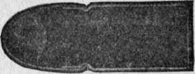
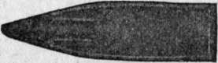

Killing Power. Part 3
Description
This section is from the "" book, by .
Killing Power. Part 3
Figure 14.
The fact that the base of a soft-nose is covered by the metal envelope affects its upsettage on firing. Hence it may be advisable to make such bullets a trifle super-caliber, to insure that they seal the bore gas-tight when they issue from the cartridge shell. Lack of care in this respect accounts, I think, for much of the inaccuracy that has been observed with bullets of this class.
Recently a capped bullet has been introduced (fig. 15) consisting of a cylindrical core of lead encased in hard metal, dished out in front like the " man-stopper" revolver bullet, and covered at the head with a hollow cap of thin copper. It expands with certainty, yet holds together and penetrates well, inflicting a very severe wound. In Spitzer bullets the cap is pointed and the front of core has a shallow cavity (fig. 16).
Figure 15.
Figure 16.
Until further reports are received from the field, covering all kinds of big game hunting, it is too early to determine whether the expanding principle should or should not be applied to Spitzer bullets for general hunting. The sharp-point bullet, with its high velocity, has revolutionized military ammunition and is likely to do the same for sporting arms of all calibers. When used in proper barrels it is the most accurate missile known. It maintains speed and energy so much better than those with rounded or ogival head that ballistic tables employed in the old way will not serve to calculate its curve of flight, which is much lower than that of an old-style projectile of the same caliber, same weight, and same muzzle velocity.
More extraordinary still is the fact that instead of the sharp-point penetrating bone or tissue more easily and with less disruption of channel, as we naturally would expect, it will, when striking at very high speed, smash and pulp a considerable area around the bullet's course, thereby delivering a paralyzing, knock-out blow. It is the full-jacketed Spitzer of which I speak—the regular military pattern.
At the extreme speed of close quarters it is checked or stopped by less thickness of flesh or bone than at long range. If it goes through, the wound of exit is large and lacerated. All this depends upon very high velocity, the minimum required for knock-out effect seeming to be about 2,000 feet a second at point of impact (not muzzle of gun) which corresponds to a range of 300 yards with the .30 Springfield-Mauser* used by our army and navy. At low speed the Spitzer merely drills a small hole, like that of the older military bullet.
To sum up: energy actually utilized in shock depends upon resistance offered by the animal's body. Resistance, so far as the missile is concerned, depends upon (1) the size to which the bullet mushrooms, or (2) upon the speed of bullet being so high that tissues and body fluids cannot give way easily to let the projectile pass, but set up a sudden and violent pressure all around the neighborhood of the wound, with consequent shattering effect over a large area.
*I call our service arm the Springfield-Mauser because it is a Mauser action slightly modified by our ordnance board. A second-hand gun of another kind has recently been marketed under the trade name of " Springfield-Mauser," which will not take our service ammunition and is inferior in every respect.
A large bullet is more effective than a small one provided that its velocity is correspondingly great and that it is not too short to maintain energy and hold together so as to penetrate. The minimum length permissible, in calibers, that I mentioned in Chapter I, is a good rule-of-thumb by which to judge force as well as accuracy. In case of doubt, use a still longer bullet. Short bullets are not fit to use on any but soft-skinned game, and then only at short range. To trust them on dangerous beasts is folly.
American riflemen of the old school inclined toward very light charges. There was a time when game was so plentiful and (relatively) so unwary that a hunter generally had a fair chance to display exquisite marksmanship—the art of the nail-driver—at the short ranges that were then the rule.
Conditions change. We take running shots nowadays and long shots that our forefathers would have considered foolish. In such hunting it is utterly impossible to " put the bullet in the right place " so unfailingly as of yore. To be humane, then—to be sportsmen instead of butchers and bunglers—we must use charges of much greater power than were customary a quarter of a century ago. This we still can do with small bores, owing to improved ammunition.
The advantages of a small bore are plain: a light and handy weapon, comfortable in the saddle or on an all-day tramp, light ammunition, moderate recoil, low trajectory, fine accuracy, and efficiency to the farthest sporting ranges.
Having spoken at length of big game ammunition, I may add a few words on the much simpler matter of cartridges for small game.
The .22 short, of good make, is very accurate up to thirty-five yards, but unreliable beyond fifty. Its proper use is for miniature target practice and exterminating vermin. To employ so feeble a charge on squirrels, rabbits, or game birds is cruel, because many will escape in crippled condition. The .22 long is not so accurate and has no superior merit of any kind, the difference in trajectory and killing power between it and the .22 short being microscopic.
The .22 long-rifle is the most accurate rim-fire cartridge of its caliber. Varieties of it called armory cartridges, and known as the .22 Krag, .22 U. S., and .22 Stevens-Pope, differ only in having the bullet firmly seated in the shell so as not to pull out in the barrel throat when a loaded cartridge is ejected—a distinct advantage. The .22 automatic is of variable merit, as will be seen in the table. The best rim-fire hunting cartridge of this caliber is the .22-7 Winchester, model of 1890. It is accurate to one hundred and fifty yards and has considerably greater killing power than either of the others; in fact it is the only .22 rim-fire that should be used on game larger than squirrels.
Continue to: